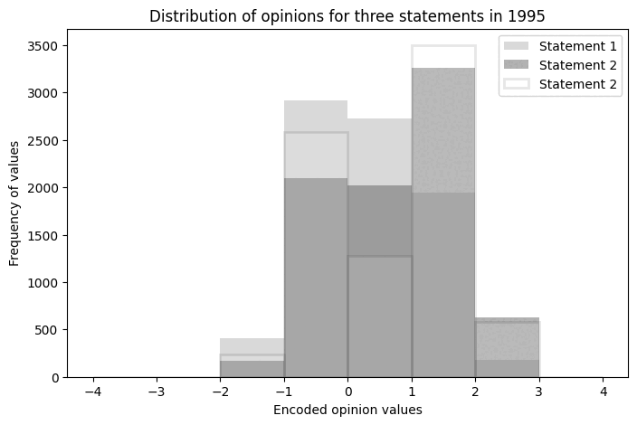
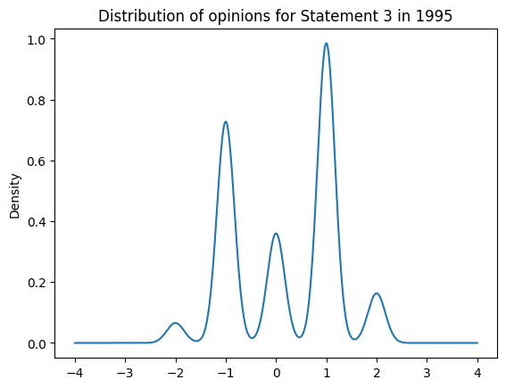
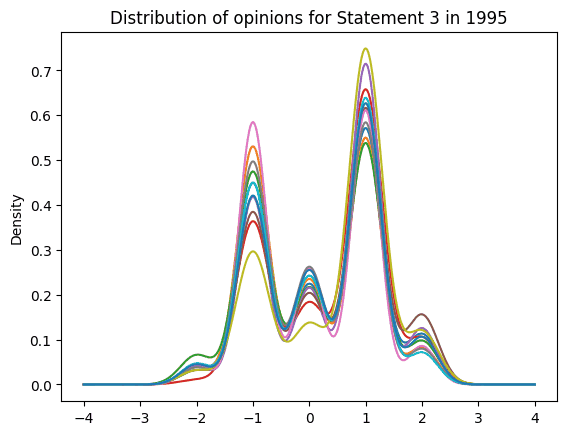
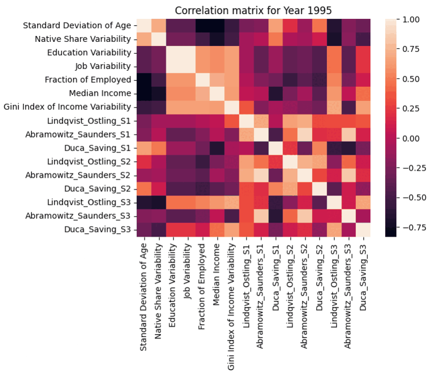
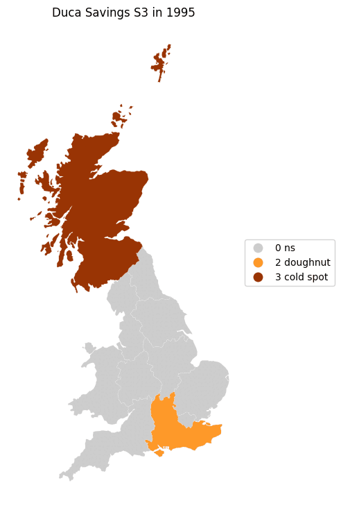
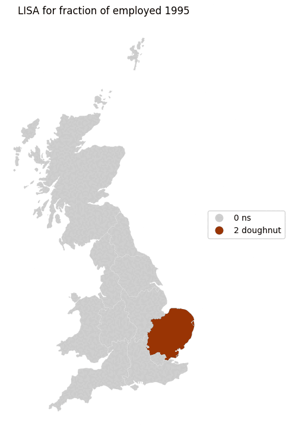

Chinna Subbaraya Siddharth (Sid) Ramavajjala (ramavajjala@wisc.edu) a, Ramakrishna Raju Gangaraju (grk.gangaraju@wisc.edu) a
a - Department of Geography, University of Wisconsin - Madison, USA
Introduction:
- Political polarization is the divergence of individual attitudes from a central point towards extreme edges (far right or far left). The idea of polarization keeps changing based on context and country. For instance, In the United States (US), polarization is used for assessing the ideologies of candidates and the amount of influence they wield on the voters. In the United Kingdom (UK), polarization is used to assess policy acceptance rate and predict trends when a referendum is passed.
- However, political polarization is measured on qualitative information either collected from survey data or a questionnaire. The questionnaire consists of questions for the participants to either strongly agree, agree, neither agree nor disagree, disagree, or strongly agree. Therefore, each opinion is encoded with values in the form of a diverging scale. Following encoding, the sentiments are investigated using statistical models. Due to two-party system (Democrat Vs. Republican - bipartisan nature) in the US, political polarization is widely studied. As a result, the bulk of literature quantifying the qualitative information of opinions is produced in the US.
- Therefore, we have tried to implement a similar conceptualization from the paper titled "Political Polarization in the UK: Measures and socio-economic correlates" by Daryna Grechyna. Prof Grechyna is faculty in the University of Grenada, Spain, and teaches topics related to dynamic macroeconomics, political economy, and economic growth. Furthermore, she used IBM SPSS software to analyze and produce the results of her research. Our key idea is to take the concepts of Prof Grechyna and Pythonize (convert into Python) them with geospatial analysis.
Data:
- Data is downloaded from the UK data service portal, which is access-based. British Household Panel Survey (BHPS) data collected from 1991 – 2009. Each year is referred to as a "wave." And data starts from Wave 1 (1991) and ends with Wave 18 (2009). The information could be downloaded in SPSS format as zip file, with each folder (bhps_w1) containing several files with different names. However, our interest data should be found with the name - [string for a particular wave]indresp. Data conversion is required from SPSS to CSV. For instance, bhps_w1 would be aindresp.csv (after conversion). Each file contains about 700 – 900 columns. However, one critical change after wave 1 is that all information would be regional instead of county level. Therefore, we have capitalized our analysis based on that one column which has spatial information.
Methods and Analysis:
- Grechyna (2022) used calculations to derive normalized values for potential determinants of political polarization. Therefore, this enables us to evaluate trends and correlates on a regional basis (a group by "region" is applied) - Dissimilarity Index and Gini Index of income inequality to distribute weights of each group type.
- The political polarization measured based in our study is based on three statements (S1, S2, S3) spread across years (1995, 2000, 2004).
- Statement 1: “Private enterprise is the best way to solve Britain’s economic problems.”
- Statement 2: “Major public services and industries ought to be in state ownership.”
- Statement 3: “It is the government’s responsibility to provide a job for everyone who wants one.”
- Furthermore, the political climate is analyzed by adopting three calculations:
- Lindqvist and Ostling (2010): The variance of encoded opinions is calculated for each region to understand the deviation and distribution of opinions for each statement.

- Abramowitz and Saunders (2008): It is based on calculating ideological distances of encoded opinions for each region, i.e., performing a mean over the absolute sum of values for each statement.

- Duca and Saving (2016): It is based on effective antagonisms across different social groups, i.e., computing the share of each group (weight calculations) and multiplying against a square of every other group size with encoded opinion values grouped by each region.

Only valid opinions are considered and encoded as follows {Strongly agree: 2, Agree: 1, Neither agree nor disagree: 0, Disagree: -1, Strongly Disagree: -2}.
- The normalized calculation is performed over specific information: Education variability, Job variability computed through the dissimilarity index. Income is computed as median income and the Gini Index of income inequality.

Results & discussions:
 
Encoded opinions distribution over time (for the UK), Encoded opinions distribution over time by each UK region during 1995 – 2004.

-
Key findings are: Three polarization measures are correlated to an extent for each period computed as part of our study. First, there is a positive correlation between political polarization with job status variability. There is a negative correlation between polarization with an increase in employment rate and the share of natives.
-
Interestingly, job status variability and education variability are strongly positively correlated in the analyzed years. From this, we can understand there are fewer entrepreneurship capabilities or lower encouragement from the government for entrepreneurship.
- We have also performed Local Moran’s I for Duca Savings based on statement 3: and Fraction of employed:
 
References :
- Grechyna, D. Political polarization in the UK: measures and socio-economic correlates. Const Polit Econ (2022). https://doi.org/10.1007/s10602-022-09368-8
- Lindqvist, E., & Östling, R. (2010). Political polarization and the size of government. American Political Science Review, 104(3), 543–565.
- Abramowitz, A. I., & Saunders, Kyle L. (2008). Is polarization a myth? The Journal of Politics, 70(2), 542–555.
- Duca, J. V., & Saving, J. L. (2016). Income inequality and political polarization: Time series evidence over nine decades. Review of Income and Wealth, 62(3), 445–466.